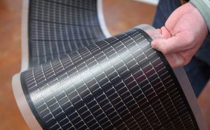
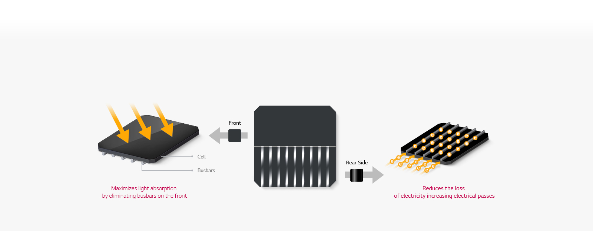

With our solar panels, electricity companies can take advantage of them to get more energy,
this may help companies reduce costs for obtaining energy.
Thus, it also provides our range of solar panels to reduce the areas used on land and its ability to trim on a moving surface, which is water.

This type of solar panel is thin and streamlined as the picture shows, and it takes the shape of the surface on which it is installed.
-It has a streamlined, light weight and a little thickness.
-It is suitable for many applications such as rooftops and transport vehicles.
-It is the most efficient type, so its efficiency may exceed 94%.
-Its life span is up to 25 years.
-A species is more expensive if its long service life is calculated in the price equation.
